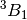
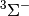

| dfmp2-4 |
conventional and density-fitting mp2 test of mp2 itself and setting scs-mp2 |
| scf2 |
RI-SCF cc-pVTZ energy of water, with Z-matrix input and cc-pVTZ-RI auxilliary basis. |
| fnocc2 |
Test G2 method for H2O |
| cc22 |
ROHF-EOM-CCSD/DZ on the lowest two states of each irrep in  CH2. |
| fnocc4 |
Test FNO-DF-CCSD(T) energy |
| mcscf2 |
TCSCF cc-pVDZ energy of asymmetrically displaced ozone, with Z-matrix input. |
| omp3-4 |
SCS-OMP3 cc-pVDZ geometry optimization for the H2O molecule. |
| min_input |
This checks that all energy methods can run with a minimal input and set symmetry. |
| mp2-1 |
All-electron MP2 6-31G** geometry optimization of water |
| cc25 |
Single point gradient of 1-2B2 state of H2O+ with EOM-CCSD |
| opt6 |
Various constrained energy minimizations of HOOH with cc-pvdz RHF |
| omp2_5-grad1 |
OMP2.5 cc-pVDZ gradient for the H2O molecule. |
| fd-gradient |
SCF STO-3G finite-difference tests |
| scf6 |
Tests RHF/ROHF/UHF SCF gradients |
| psimrcc-ccsd_t-3 |
Mk-MRCCSD(T) single point.  CH2 state described using the Ms = 0 component of the singlet. Uses RHF singlet orbitals. CH2 state described using the Ms = 0 component of the singlet. Uses RHF singlet orbitals. |
| dfmp2-3 |
DF-MP2 cc-pVDZ frozen core gradient of benzene, computed at the DF-SCF cc-pVDZ geometry |
| mcscf1 |
ROHF 6-31G** energy of the state of CH2, with Z-matrix input. The occupations are specified explicitly. |
| ci-multi |
BH single points, checking that program can run multiple instances of DETCI in a single input, without an intervening clean() call |
| sapt5 |
SAPT0 aug-cc-pVTZ computation of the charge transfer energy of the water dimer. |
| adc2 |
ADC/aug-cc-pVDZ on two water molecules that are distant from 1000 angstroms from each other |
| cc40 |
RHF-CC2-LR/cc-pVDZ optical rotation of H2O2. gauge = length, omega = (589 355 nm) |
| dcft2 |
DC-06 calculation for the He dimer. This performs a two-step update of the orbitals and cumulant, using DIIS extrapolation. Four-virtual integrals are handled in the MO Basis. |
| cc32 |
CC3/cc-pVDZ H2O  geom from Olsen et al., JCP 104, 8007 (1996) geom from Olsen et al., JCP 104, 8007 (1996) |
| tu1-h2o-energy |
Sample HF/cc-pVDZ H2O computation |
| dcft4 |
DCFT calculation for the HF+ using DC-06 functional. This performs both two-step and simultaneous update of the orbitals and cumulant using DIIS extrapolation. Four-virtual integrals are first handled in the MO Basis for the first two energy computations. In the next two the ao_basis=disk algorithm is used, where the transformation of integrals for four-virtual case is avoided. The computation is then repeated using the DC-12 functional with the same algorithms. |
| pywrap-db3 |
Test that Python Molecule class processes geometry like PsiMod Molecule class. |
| fci-h2o |
6-31G H2O Test FCI Energy Point |
| ocepa1 |
OCEPA cc-pVDZ energy for the H2O molecule. |
| psimrcc-pt2 |
Mk-MRPT2 single point. F2 state described using the Ms = 0 component of the singlet. Uses TCSCF singlet orbitals. |
| cc46 |
EOM-CC2/cc-pVDZ on H2O2 with two excited states in each irrep |
| mp2_5-grad1 |
MP2.5 cc-pVDZ gradient for the H2O molecule. |
| mints4 |
A demonstration of mixed Cartesian/ZMatrix geometry specification, using variables, for the benzene-hydronium complex. Atoms can be placed using ZMatrix coordinates, whether they belong to the same fragment or not. Note that the Cartesian specification must come before the ZMatrix entries because the former define absolute positions, while the latter are relative. |
| fd-freq-gradient-large |
SCF DZ finite difference frequencies by energies for C4NH4 |
| dft1-alt |
DFT Functional Test |
| pywrap-checkrun-rohf |
This checks that all energy methods can run with a minimal input and set symmetry. |
| cc48 |
reproduces dipole moments in J.F. Stanton’s “biorthogonal” JCP paper |
| psimrcc-fd-freq2 |
Mk-MRCCSD frequencies. O$_3` state described using the Ms = 0 component of the singlet. Uses TCSCF orbitals. |
| cc28 |
CCSD/cc-pVDZ optical rotation calculation (length gauge only) on Z-mat H2O2 |
| cc6 |
Frozen-core CCSD(T)/cc-pVDZ on C4H4N anion with disk ao algorithm |
| ghosts |
Density fitted MP2 cc-PVDZ/cc-pVDZ-RI computation of formic acid dimer binding energy using explicit specification of ghost atoms. This is equivalent to the dfmp2_1 sample but uses both (equivalent) specifications of ghost atoms in a manual counterpoise correction. |
| cc8 |
UHF-CCSD(T) cc-pVDZ frozen-core energy for the  state of the CN radical, with Z-matrix input. state of the CN radical, with Z-matrix input. |
| cepa2 |
cc-pvdz H2O Test ACPF Energy/Properties |
| rasci-ne |
Ne atom RASCI/cc-pVQZ Example of split-virtual CISD[TQ] from Sherrill and Schaefer, J. Phys. Chem. XXX This uses a “primary” virtual space 3s3p (RAS 2), a “secondary” virtual space 3d4s4p4d4f (RAS 3), and a “tertiary” virtual space consisting of the remaining virtuals. First, an initial CISD computation is run to get the natural orbitals; this allows a meaningful partitioning of the virtual orbitals into groups of different importance. Next, the RASCI is run. The split-virtual CISD[TQ] takes all singles and doubles, and all triples and quadruples with no more than 2 electrons in the secondary virtual subspace (RAS 3). If any electrons are present in the tertiary virtual subspace (RAS 4), then that excitation is only allowed if it is a single or double. |
| cc5a |
RHF CCSD(T) STO-3G frozen-core energy of C4NH4 Anion |
| ocepa2 |
OCEPA cc-pVDZ energy with B3LYP initial guess for the NO radical |
| mcscf3 |
RHF 6-31G** energy of water, using the MCSCF module and Z-matrix input. |
| frac |
Carbon/UHF Fractionally-Occupied SCF Test Case |
| pywrap-basis |
SAPT calculation on bimolecular complex where monomers are unspecified so driver auto-fragments it. Basis set and auxiliary basis sets are assigned by atom type. |
| psimrcc-sp1 |
Mk-MRCCSD single point.  O2 state described using the Ms = 0 component of the triplet. Uses ROHF triplet orbitals. |
| fd-freq-gradient |
STO-3G frequencies for H2O by finite-differences of gradients |
| dfmp2-1 |
Density fitted MP2 cc-PVDZ/cc-pVDZ-RI computation of formic acid dimer binding energy using automatic counterpoise correction. Monomers are specified using Cartesian coordinates. |
| cc13 |
UHF-CCSD/cc-pVDZ CH2 geometry optimization via analytic gradients |
| cc34 |
RHF-CCSD/cc-pVDZ energy of H2O partitioned into pair energy contributions. |
| cepa3 |
cc-pvdz H2O Test coupled-pair CISD against DETCI CISD |
| cisd-opt-fd |
H2O CISD/6-31G** Optimize Geometry by Energies |
| omp2-grad2 |
OMP2 cc-pVDZ gradient for the NO radical |
| mrcc1 |
CCSDT cc-pVDZ energy for the H2O molecule using MRCC |
| cc49 |
EOM-CC3(UHF) on CH radical with user-specified basis and properties for particular root |
| cc41 |
RHF-CC2-LR/cc-pVDZ optical rotation of H2O2. gauge = both, omega = (589 355 nm) |
| sapt1 |
SAPT0 cc-pVDZ computation of the ethene-ethyne interaction energy, using the cc-pVDZ-JKFIT RI basis for SCF and cc-pVDZ-RI for SAPT. Monomer geometries are specified using Cartesian coordinates. |
| cc39 |
RHF-CC2-LR/cc-pVDZ dynamic polarizabilities of HOF molecule. |
| cisd-h2o+-2 |
6-31G** H2O+ Test CISD Energy Point |
| mints2 |
A test of the basis specification. A benzene atom is defined using a ZMatrix containing dummy atoms and various basis sets are assigned to different atoms. The symmetry of the molecule is automatically lowered to account for the different basis sets. |
| dft-b2plyp |
Double-hybrid density functional B2PYLP. Reproduces portion of Table I in S. Grimme’s J. Chem. Phys 124 034108 (2006) paper defining the functional. |
| props3 |
DF-SCF cc-pVDZ multipole moments of benzene, up to 7th order and electrostatic potentials evaluated at the nuclear coordinates |
| opt2-fd |
SCF DZ allene geometry optimzation, with Cartesian input |
| dcft6 |
DCFT calculation for the triplet O2 using DC-06, DC-12 and CEPA0 functionals. Only two-step algorithm is tested. |
| sapt2 |
SAPT0 aug-cc-pVDZ computation of the benzene-methane interaction energy, using the aug-pVDZ-JKFIT DF basis for SCF, the aug-cc-pVDZ-RI DF basis for SAPT0 induction and dispersion, and the aug-pVDZ-JKFIT DF basis for SAPT0 electrostatics and induction. This example uses frozen core as well as asyncronous I/O while forming the DF integrals and CPHF coefficients. |
| cc19 |
CCSD/cc-pVDZ dipole polarizability at two frequencies |
| scf-guess-read |
Sample UHF/cc-pVDZ H2O computation on a doublet cation, using RHF/cc-pVDZ orbitals for the closed-shell neutral as a guess |
| cc4 |
RHF-CCSD(T) cc-pVQZ frozen-core energy of the BH molecule, with Cartesian input. After the computation, the checkpoint file is renamed, using the PSIO handler. |
| cc10 |
ROHF-CCSD cc-pVDZ energy for the state of the CN radical |
| castup3 |
SCF with various combinations of pk/density-fitting, castup/no-castup, and spherical/cartesian settings. Demonstrates that puream setting is getting set by orbital basis for all df/castup parts of calc. Demonstrates that answer doesn’t depend on presence/absence of castup. Demonstrates (by comparison to castup2) that output file doesn’t depend on options (scf_type) being set global or local. This input uses local. |
| cc8c |
ROHF-CCSD cc-pVDZ frozen-core energy for the state of the CN radical, with Cartesian input. |
| scf1 |
RHF cc-pVQZ energy for the BH molecule, with Cartesian input. |
| cisd-h2o+-0 |
6-31G** H2O+ Test CISD Energy Point |
| cc43 |
RHF-CC2-LR/STO-3G optical rotation of (S)-methyloxirane. gauge = both, omega = (589 355 nm) |
| cc27 |
Single point gradient of 1-1B2 state of H2O with EOM-CCSD |
| cisd-sp-2 |
6-31G** H2O Test CISD Energy Point |
| opt1 |
SCF STO-3G geometry optimzation, with Z-matrix input |
| dft2 |
DFT Functional Test |
| cc15 |
RHF-B-CCD(T)/6-31G** H2O single-point energy (fzc, MO-basis  ) ) |
| dft1 |
DFT Functional Test |
| cc18 |
RHF-CCSD-LR/cc-pVDZ static polarizability of HOF |
| mom |
Maximum Overlap Method (MOM) Test. MOM is designed to stabilize SCF convergence and to target excited Slater determinants directly. |
| fci-h2o-fzcv |
6-31G H2O Test FCI Energy Point |
| pywrap-cbs1 |
Various basis set extrapolation tests |
| fd-freq-energy |
SCF STO-3G finite-difference frequencies from energies |
| dcft5 |
DC-06 calculation for the O2 molecule (triplet ground state). This performs geometry optimization using two-step and simultaneous solution of the response equations for the analytic gradient. |
| pywrap-all |
Intercalls among python wrappers- database, cbs, optimize, energy, etc. Though each call below functions individually, running them all in sequence or mixing up the sequence is aspirational at present. Also aspirational is using the intended types of gradients. |
| opt2 |
SCF DZ allene geometry optimzation, with Cartesian input |
| mp3-grad1 |
MP3 cc-pVDZ gradient for the H2O molecule. |
| scf11-freq-from-energies |
Test frequencies by finite differences of energies for planar C4NH4 TS |
| opt5 |
6-31G** UHF CH2 3B1 optimization. Uses a Z-Matrix with dummy atoms, just for demo and testing purposes. |
| cc23 |
ROHF-EOM-CCSD/DZ analytic gradient lowest  state of H2O+ (A1 excitation) state of H2O+ (A1 excitation) |
| cc54 |
CCSD dipole with user-specified basis set |
| ocepa-freq1 |
OCEPA cc-pVDZ freqs for C2H2 |
| cc26 |
Single-point gradient, analytic and via finite-differences of 2-1A1 state of H2O with EOM-CCSD |
| fci-tdm |
He2+ FCI/cc-pVDZ Transition Dipole Moment |
| rasci-c2-active |
6-31G* C2 Test RASCI Energy Point, testing two different ways of specifying the active space, either with the ACTIVE keyword, or with RAS1, RAS2, RESTRICTED_DOCC, and RESTRICTED_UOCC |
| ocepa-grad1 |
OCEPA cc-pVDZ gradient for the H2O molecule. |
| dft3 |
DFT integral algorithms test, performing w-B97 RKS and UKS computations on water and its cation, using all of the different integral algorithms. This tests both the ERI and ERF integrals. |
| tu2-ch2-energy |
Sample UHF/6-31G** CH2 computation |
| cc16 |
UHF-B-CCD(T)/cc-pVDZ CH2 single-point energy (fzc, MO-basis ) |
| sapt4 |
SAPT2+(3) aug-cc-pVDZ computation of the formamide dimer interaction energy, using the aug-cc-pVDZ-JKFIT DF basis for SCF and aug-cc-pVDZ-RI for SAPT. This example uses frozen core as well as MP2 natural orbital approximations. |
| cc47 |
EOM-CCSD/cc-pVDZ on H2O2 with two excited states in each irrep |
| dft-freq |
Frequencies for H2O B3LYP/6-31G* at optimized geometry |
| mp2-grad1 |
MP2 cc-pVDZ gradient for the H2O molecule. |
| scf3 |
are specified explicitly. |
| ocepa-grad2 |
OCEPA cc-pVDZ gradient for the NO radical |
| dftd3-energy |
Exercises the various DFT-D corrections, both through python directly and through c++ |
| pywrap-db1 |
Database calculation, so no molecule section in input file. Portions of the full databases, restricted by subset keyword, are computed by sapt0 and dfmp2 methods. |
| cc52 |
CCSD Response for H2O2 |
| pywrap-db2 |
Database calculation, run in sow/reap mode. |
| cc50 |
EOM-CC3(ROHF) on CH radical with user-specified basis and properties for particular root |
| omp2-2 |
OMP2 cc-pVDZ energy with ROHF initial guess orbitals for the NO radical |
| cc12 |
Single point energies of multiple excited states with EOM-CCSD |
| cisd-sp |
6-31G** H2O Test CISD Energy Point |
| mints6 |
Patch of a glycine with a methyl group, to make alanine, then DF-SCF energy calculation with the cc-pVDZ basis set |
| mrcc4 |
CCSDT cc-pVDZ optimization and frequencies for the H2O molecule using MRCC |
| omp2-5 |
SOS-OMP2 cc-pVDZ geometry optimization for the H2O molecule. |
| props1 |
RHF STO-3G dipole moment computation, performed by applying a finite electric field and numerical differentiation. |
| cc42 |
RHF-CC2-LR/STO-3G optical rotation of (S)-methyloxirane. gauge = length, omega = (589 355 nm) |
| omp2_5-1 |
OMP2 cc-pVDZ energy for the H2O molecule. |
| fci-dipole |
6-31G H2O Test FCI Energy Point |
| fnocc3 |
Test FNO-QCISD(T) computation |
| tu4-h2o-freq |
Frequencies for H2O HF/cc-pVDZ at optimized geometry |
| dcft3 |
DC-06 calculation for the He dimer. This performs a simultaneous update of the orbitals and cumulant, using DIIS extrapolation. Four-virtual integrals are handled in the AO Basis, using integrals stored on disk. |
| cc4a |
RHF-CCSD(T) cc-pVQZ frozen-core energy of the BH molecule, with Cartesian input. This version tests the FROZEN_DOCC option explicitly |
| cisd-h2o+-1 |
6-31G** H2O+ Test CISD Energy Point |
| dft-psivar |
HF and DFT variants single-points on zmat methane, mostly to test that PSI variables are set and computed correctly. |
| pywrap-alias |
Test parsed and exotic calls to energy() like zapt4, mp2.5, and cisd are working |
| cc8b |
ROHF-CCSD cc-pVDZ frozen-core energy for the state of the CN radical, with Cartesian input. |
| mints3 |
Test individual integral objects for correctness. |
| omp3-2 |
OMP3 cc-pVDZ energy with ROHF initial guess for the NO radical |
| cc2 |
6-31G** H2O CCSD optimization by energies, with Z-Matrix input |
| pywrap-checkrun-convcrit |
Advanced python example sets different sets of scf/post-scf conv crit and check to be sure computation has actually converged to the expected accuracy. |
| cepa0-grad2 |
CEPA cc-pVDZ gradient for the NO radical |
| cc45 |
RHF-EOM-CC2/cc-pVDZ lowest two states of each symmetry of H2O. |
| fci-tdm-2 |
BH-H2+ FCI/cc-pVDZ Transition Dipole Moment |
| psimrcc-ccsd_t-2 |
Mk-MRCCSD(T) single point. CH2 state described using the Ms = 0 component of the singlet. Uses RHF singlet orbitals. |
| sad1 |
Test of the superposition of atomic densities (SAD) guess, using a highly distorted water geometry with a cc-pVDZ basis set. This is just a test of the code and the user need only specify guess=sad to the SCF module’s (or global) options in order to use a SAD guess. The test is first performed in C2v symmetry, and then in C1. |
| psimrcc-fd-freq1 |
Mk-MRCCSD single point. O2 state described using the Ms = 0 component of the triplet. Uses ROHF triplet orbitals. |
| rasci-h2o |
RASCI/6-31G** H2O Energy Point |
| cc17 |
Single point energies of multiple excited states with EOM-CCSD |
| tu3-h2o-opt |
Optimize H2O HF/cc-pVDZ |
| mrcc2 |
CCSDT(Q) cc-pVDZ energy for the H2O molecule using MRCC. This example builds up from CCSD. First CCSD, then CCSDT, finally CCSDT(Q). |
| cc21 |
ROHF-EOM-CCSD/DZ analytic gradient lowest  excited state of H2O+ (B1 excitation) excited state of H2O+ (B1 excitation) |
| opt4 |
SCF cc-pVTZ geometry optimzation, with Z-matrix input |
| cc13a |
UHF-CCSD(T)/cc-pVDZ CH2 geometry optimization via analytic gradients |
| mpn-bh |
MP(n)/aug-cc-pVDZ BH Energy Point, with n=2-19. Compare against M. L. Leininger et al., J. Chem. Phys. 112, 9213 (2000) |
| pywrap-checkrun-uhf |
This checks that all energy methods can run with a minimal input and set symmetry. |
| omp2_5-grad2 |
OMP2.5 cc-pVDZ gradient for the NO radical |
| cc38 |
RHF-CC2-LR/cc-pVDZ static polarizabilities of HOF molecule. |
| mrcc3 |
CCSD(T) cc-pVDZ geometry optimization for the H2O molecule using MRCC. |
| opt3 |
SCF cc-pVDZ geometry optimzation, with Z-matrix input |
| omp2_5-2 |
OMP2 cc-pVDZ energy for the H2O molecule. |
| cc3 |
cc3: RHF-CCSD/6-31G** H2O geometry optimization and vibrational frequency analysis by finite-differences of gradients |
| scf-bz2 |
Benzene Dimer Out-of-Core HF/cc-pVDZ |
| cc51 |
EOM-CC3/cc-pVTZ on H2O |
| fci-h2o-2 |
6-31G H2O Test FCI Energy Point |
| mp2-grad2 |
MP2 cc-pVDZ gradient for the NO radical |
| cc31 |
CCSD/sto-3g optical rotation calculation (both gauges) at two frequencies on methyloxirane |
| psimrcc-ccsd_t-1 |
Mk-MRCCSD(T) single point. CH2 state described using the Ms = 0 component of the singlet. Uses RHF singlet orbitals. |
| cc11 |
Frozen-core CCSD(ROHF)/cc-pVDZ on CN radical with disk-based AO algorithm |
| pywrap-checkrun-rhf |
This checks that all energy methods can run with a minimal input and set symmetry. |
| fd-freq-energy-large |
SCF DZ finite difference frequencies by energies for C4NH4 |
| cc33 |
CC3(UHF)/cc-pVDZ H2O geom from Olsen et al., JCP 104, 8007 (1996) |
| dft-grad |
DF-BP86-D2 cc-pVDZ frozen core gradient of S22 HCN |
| tu6-cp-ne2 |
Example potential energy surface scan and CP-correction for Ne2 |
| cc30 |
CCSD/sto-3g optical rotation calculation (length gauge only) at two frequencies on methyloxirane |
| omp3-3 |
OMP3 cc-pVDZ energy with B3LYP initial guess for the NO radical |
| sapt3 |
SAPT2+3(CCD) aug-cc-pVDZ computation of the water dimer interaction energy, using the aug-cc-pVDZ-JKFIT DF basis for SCF and aug-cc-pVDZ-RI for SAPT. |
| scf5 |
Test of all different algorithms and reference types for SCF, on singlet and triplet O2, using the cc-pVTZ basis set. |
| pywrap-opt-sowreap |
Finite difference optimization, run in sow/reap mode. |
| cc8a |
ROHF-CCSD(T) cc-pVDZ frozen-core energy for the state of the CN radical, with Cartesian input. |
| opt1-fd |
SCF STO-3G geometry optimzation, with Z-matrix input, by finite-differences |
| dft-dldf |
Dispersionless density functional (dlDF+D) internal match to Psi4 Extensive testing has been done to match supplemental info of Szalewicz et. al., Phys. Rev. Lett., 103, 263201 (2009) and Szalewicz et. al., J. Phys. Chem. Lett., 1, 550-555 (2010) |
| castup1 |
Test of SAD/Cast-up (mainly not dying due to file weirdness) |
| omp3-5 |
SOS-OMP3 cc-pVDZ geometry optimization for the H2O molecule. |
| adc1 |
ADC/6-31G** on H2O |
| cc9 |
UHF-CCSD(T) cc-pVDZ frozen-core energy for the state of the CN radical, with Z-matrix input. |
| pubchem1 |
Benzene vertical singlet-triplet energy difference computation, using the PubChem database to obtain the initial geometry, at the UHF an ROHF levels of theory. |
| cc44 |
Test case for some of the PSI4 out-of-core codes. The code is given only 2.0 MB of memory, which is insufficient to hold either the A1 or B2 blocks of an ovvv quantity in-core, but is sufficient to hold at least two copies of an oovv quantity in-core. |
| cc35 |
CC3(ROHF)/cc-pVDZ H2O geom from Olsen et al., JCP 104, 8007 (1996) |
| omp2-4 |
SCS-OMP2 cc-pVDZ geometry optimization for the H2O molecule. |
| mp2_5-grad2 |
MP2.5 cc-pVDZ gradient for the NO radical |
| cc9a |
ROHF-CCSD(T) cc-pVDZ energy for the state of the CN radical, with Z-matrix input. |
| dfmp2-2 |
Density fitted MP2 energy of H2, using density fitted reference and automatic looping over cc-pVDZ and cc-pVTZ basis sets. Results are tabulated using the built in table functions by using the default options and by specifiying the format. |
| omp2-grad1 |
OMP2 cc-pVDZ gradient for the H2O molecule. |
| cc1 |
RHF-CCSD 6-31G** all-electron optimization of the H2O molecule |
| scf4 |
RHF cc-pVDZ energy for water, automatically scanning the symmetric stretch and bending coordinates using Python’s built-in loop mechanisms. The geometry is apecified using a Z-matrix with variables that are updated during the potential energy surface scan, and then the same procedure is performed using polar coordinates, converted to Cartesian coordinates. |
| cisd-h2o-clpse |
6-31G** H2O Test CISD Energy Point with subspace collapse |
| omp2-3 |
OMP2 cc-pVDZ energy for the NO radical |
| cepa1 |
cc-pvdz H2O Test CEPA(1) Energy |
| cc24 |
Single point gradient of 1-2B1 state of H2O+ with EOM-CCSD |
| dftd3-grad |
DF-BP86-D2 cc-pVDZ frozen core gradient of S22 HCN, calling Grimme’s dftd3 program for -D2 gradients |
| cc14 |
ROHF-CCSD/cc-pVDZ CH2 geometry optimization via analytic gradients |
| mp3-grad2 |
MP3 cc-pVDZ gradient for the NO radical |
| cc29 |
CCSD/cc-pVDZ optical rotation calculation (both gauges) on Cartesian H2O2 |
| dfscf-bz2 |
Benzene Dimer DF-HF/cc-pVDZ |
| psithon1 |
Spectroscopic constants of H2, and the full ci cc-pVTZ level of theory |
| ocepa3 |
OCEPA cc-pVDZ energy with ROHF initial guess for the NO radical |
| matrix1 |
An example of using BLAS and LAPACK calls directly from the Psi input file, demonstrating matrix multiplication, eigendecomposition, Cholesky decomposition and LU decomposition. These operations are performed on vectors and matrices provided from the Psi library. |
| cc36 |
CC2(RHF)/cc-pVDZ energy of H2O. |
| castup2 |
SCF with various combinations of pk/density-fitting, castup/no-castup, and spherical/cartesian settings. Demonstrates that puream setting is getting set by orbital basis for all df/castup parts of calc. Demonstrates that answer doesn’t depend on presence/absence of castup. Demonstrates (by comparison to castup3) that output file doesn’t depend on options (scf_type) being set global or local. This input uses global. |
| omp3-grad1 |
OMP3 cc-pVDZ gradient for the H2O molecule. |
| cc37 |
CC2(UHF)/cc-pVDZ energy of H2O+. |
| fnocc1 |
Test QCISD(T) for H2O/cc-pvdz Energy |
| omp2-1 |
OMP2 cc-pVDZ energy for the H2O molecule. |
| cepa0-grad1 |
CEPA0 cc-pVDZ gradient for the H2O molecule. |
| psimrcc-ccsd_t-4 |
Mk-MRCCSD(T) single point. O$_3` state described using the Ms = 0 component of the singlet. Uses TCSCF orbitals. |
| gibbs |
Test Gibbs free energies at 298 K of N2, H2O, and CH4. |
| omp3-grad2 |
OMP3 cc-pVDZ gradient for the NO radical |
| dft-pbe0-2 |
Internal match to psi4, test to match to literature values in litref.in/litref.out |
| zaptn-nh2 |
ZAPT(n)/6-31G NH2 Energy Point, with n=2-25 |
| cc5 |
RHF CCSD(T) aug-cc-pvtz frozen-core energy of C4NH4 Anion |
| mints1 |
Symmetry tests for a range of molecules. This doesn’t actually compute any energies, but serves as an example of the many ways to specify geometries in Psi4. |
| props2 |
DF-SCF cc-pVDZ of benzene-hydronium ion, scanning the dissociation coordinate with Python’s built-in loop mechanism. The geometry is specified by a Z-matrix with dummy atoms, fixed parameters, updated parameters, and separate charge/multiplicity specifiers for each monomer. One-electron properties computed for dimer and one monomer. |
| mints5 |
Tests to determine full point group symmetry. Currently, these only matter for the rotational symmetry number in thermodynamic computations. |
| omp3-1 |
OMP3 cc-pVDZ energy for the H2O molecule |
| tu5-sapt |
Example SAPT computation for ethene*ethine (i.e., ethylene*acetylene), test case 16 from the S22 database |
| dcft1 |
DC-06 calculation for the He dimer. This performs a simultaneous update of the orbitals and cumulant, using DIIS extrapolation. Four-virtual integrals are handled in the MO Basis. |